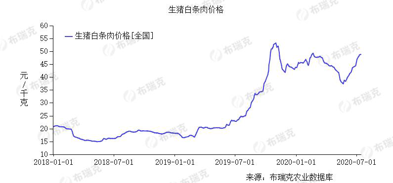
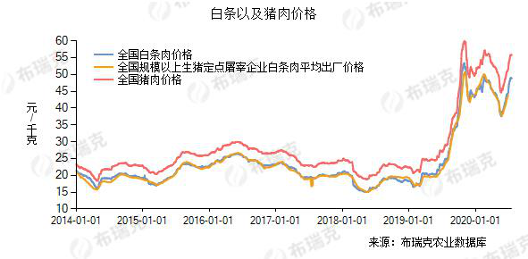
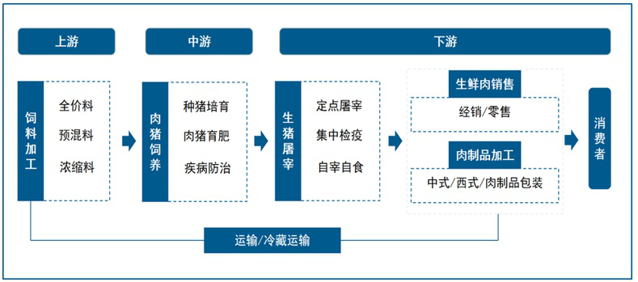
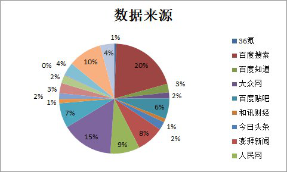
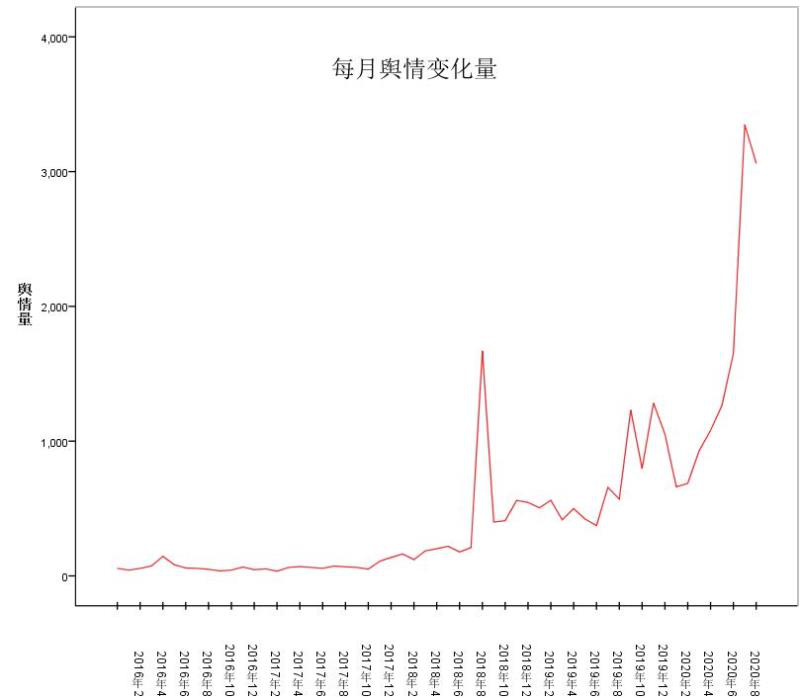
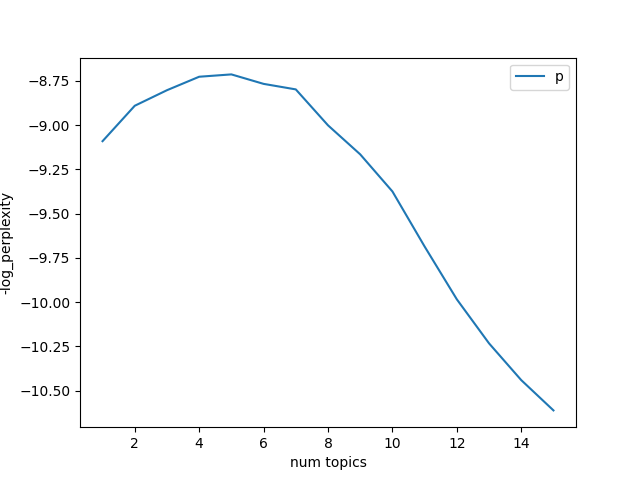
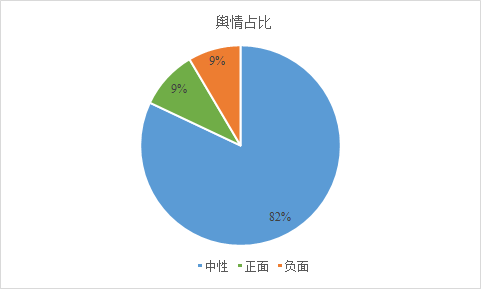
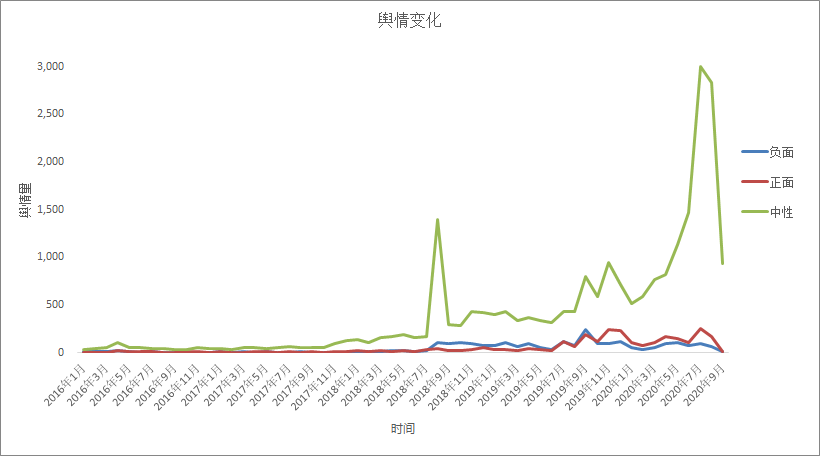
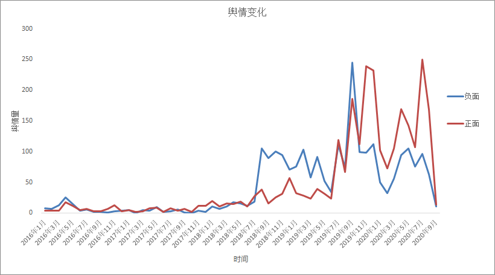

非洲猪瘟舆情动态观察报告
2018年8月出现首例非洲猪瘟疫情后，我国生猪产业一直深受非洲猪瘟疫情的困扰。2019年非洲猪瘟病例不断攀升，猪肉价格也随之“水涨船高”，全国猪价整体呈现上升趋势。到了2020年3月，非洲猪瘟疫情又有了新的爆发趋势，今年9月份，德国日本等地也开始发现非洲猪瘟病例，非洲猪瘟在全世界范围内扩散，加重了对生猪产业的影响。同时，疫苗的研发正处于临床实验阶段，距离研发成功生产投入使用至少还要两年左右的时间，非洲猪瘟对我国以及全世界经济的影响都将是一个长期的过程。
然而，在猪瘟疫情对我国生猪产业造成严重经济损害同时，猪瘟的舆情量急剧增长会对生猪产业形成网络舆情冲击，加重猪瘟疫情对我国的破坏程度。本文将立足于对非洲猪瘟爆发以来的舆情数据的研究分析，阐述自非洲猪瘟爆发以来，非洲猪瘟对我国猪价的影响，非洲猪瘟的演化趋势，舆情的情感分析等，从而更直观地了解非洲猪瘟的网络舆情情况，并可为企业和政府相关部门提供决策依据。
一、猪肉价格上涨概述
1.1猪肉价格


从布瑞克农业数据库收集到的2018年1月至2020年7月的全国白条猪价格，以及2014年1月到2020年7月全国白条猪、生猪企业出厂价格和全国猪肉价格数据可以看出，自非洲猪瘟疫情爆发以来，从2019年开始猪价一路飙升，2019年10月份有所回落，而后在2020年，受新冠疫情的影响，以及非洲猪瘟疫情的不定期发现，全国猪肉价格的波动加剧，猪价仍处于高位运行，给人民生活和公司企业生产带来一定的困扰
1.2生猪产业链

生猪产业链主要分为上中下游，受非洲猪瘟冲击，首先是生猪存栏量大大减少，企业养殖户产能迅速下降，受此影响，上游的饲料生产加工市场销售压力骤增。而由于下游生猪屠宰、价格以及销售环节对猪肉价格更为敏感，所以下游产业最受疫情影响的，生产成本从而波动加剧。另外，猪肉价格的波动也对鸡肉、牛肉、羊肉、鸭肉等禽肉类价格产生了一定的联动影响。
二、舆情发展趋势
2.1 舆情来源

监测期间，搜索引擎和新闻媒体是各地有关非洲猪瘟舆情的主要传播渠道，占据舆情总量的56%。
2.2发展趋势

自非洲猪瘟疫情爆发以来，有关猪瘟的相关报道一直受到人们的高度关注。通过每月舆情总量变化折线图，我们可以了解到大众对于猪瘟关注度的变化。
从2016年2月至2018年7月，我国国内未出现非洲猪瘟疫情，有关猪病，猪瘟的舆情量较低。
2018年8月3日，沈阳出现中国首例非洲猪瘟病例，相关舆情总量迅速上升达到峰值。由于政府扑杀病猪、补贴养殖户、稳定物价等有力措施，舆情量于2018年10月跌落至较低水平，此后一直略有波动。
2020年年初，四川和河南先后从外省调入的仔猪和种猪中排查出三起非洲猪瘟疫情。据调查，这三起疫情都是由于违法违规调运引发。自此，舆情量再度飙升。
2.3热点词云图
自2018年中国出现首例非洲猪瘟病例以来，“非洲猪瘟”“猪瘟”“疫情”成为各大搜索引擎及媒体的关注热点；“农业”“农村部”等相关词同样为网络高频词；同时，“猪肉”“价格”“生猪”“生产”“养殖”等民生问题仍然受到民众的广泛关注。
三、舆情主题与情感分析
3.1主题分布

从LDA主题挖掘模型的困惑度曲线可以看出，模型困惑度在主题数5时达到最佳。
主题1的特征词TOP100
主题2的特征词TOP100
主题3的特征词TOP100
主题4的特征词TOP100
主题5的特征词TOP100
通过对主题数以及相关特征词词频的对比分析，我们发现主题数为5时，LDA模型的分类效果最好，各主题分类结果明确，通过对主题特征词词云进行分析，我们将非洲猪瘟舆情分类为政府工作、猪瘟疫情、养猪行业、市场因素和猪肉价格这五个主题，可见这五个主题是大众关注的焦点。
3.2社会情感

从情感分布来看，全网有关非洲猪瘟信息的情绪以中性为主，占舆情总量的82%，主要内容为猪瘟引起的肉价变动，政府采取的相应措施及社会各界对于疫情状况的理性分析。正面舆情和负面舆情数量相当，各占据总量的9%。负面舆情主要为猪瘟传播引起的担忧和恐慌，猪农对于生意亏损的焦虑不满，市民对于猪瘟过后肉价上涨的抱怨。正面言论则主要与政府针对猪瘟采取的得力措施及猪瘟得到控制、猪肉价格逐步恢复正常的良好情况有关。
根据非洲猪瘟舆情文本数据的情感倾向分类结果，统计每月的舆情情感变化如图所示。


从2016年1月至2018年7月，我国尚未出现非洲猪瘟病例。网上有关猪瘟的舆情，主要为普及相关知识的中性言论。
2018年8月，中国出现首例非洲猪瘟病例。从2018年7月至2019年4月，中性舆情达到峰值后略有下降，但一直维持在较高水平。负面舆情和正面舆情数量上升，且负面舆情多于正面舆情。这说明非洲猪瘟引起了社会各界的广泛关注，同时其对人民生活造成了较大困扰。
从2019年1月至2019年3月，中性舆情仍然维持在较高水平，负面舆情略有下降，这说明政府补贴养殖户、调节肉价等一系列举措起到了一定成效。
2019年7月以后，由于非洲猪瘟再度接连发生，加上猪瘟对于生猪存栏量和肉价的后续影响逐渐显现，舆情总体呈上升趋势，言论情绪以中性为主，正面舆情多于负面舆情。